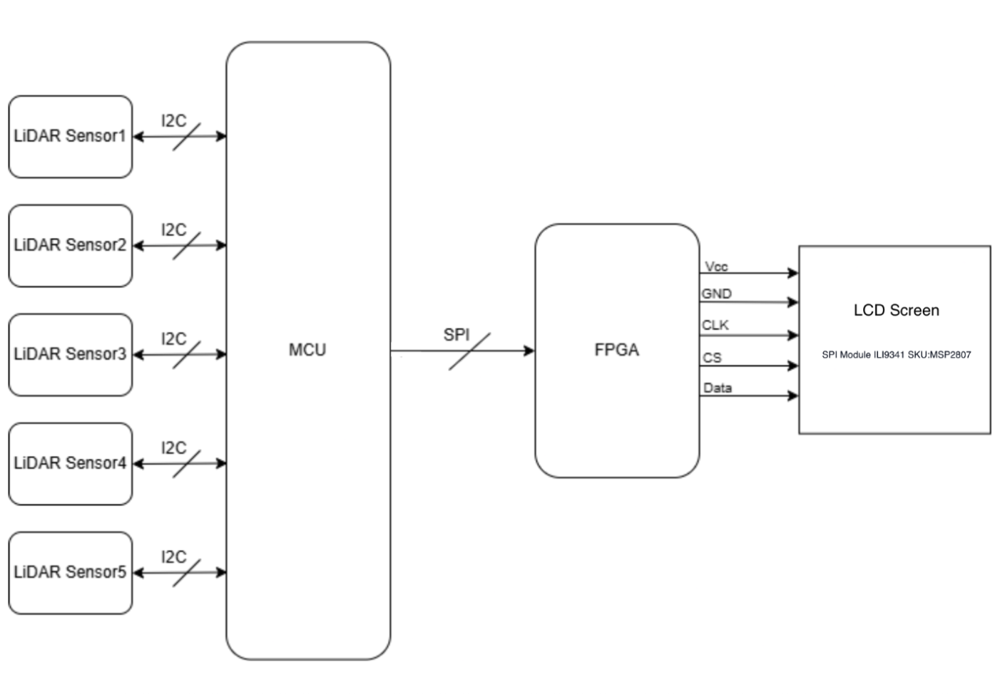
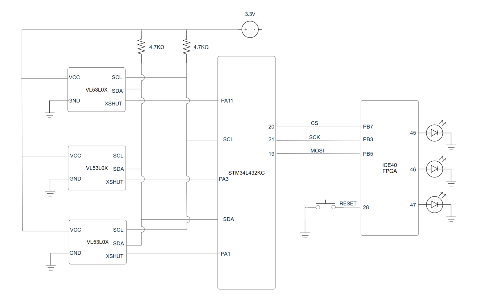
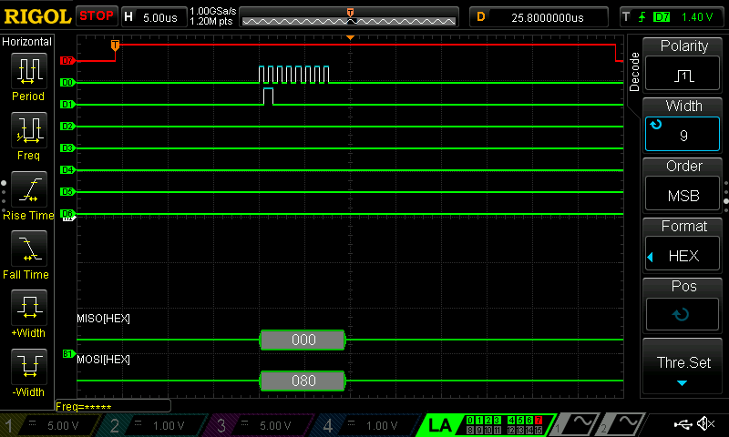
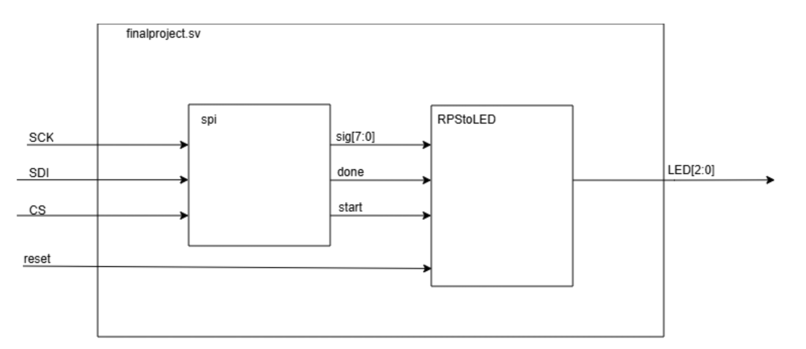
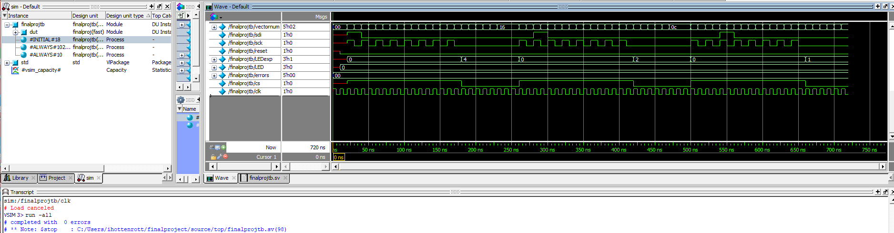

Midway Project
Introduction
The main objective of this project is to build a rock-paper scissors game, where a human player plays against the computer. An LCD, driven by the FPGA, will display the computer’s play (rock, paper, or scissors). The player’s move will be picked up by a series of 5 LiDAR sensors, and the computer’s move will be generated on the MCU. The below diagram depicts the general system that our design intends to follow.

Hardware Status:
The circuit for the VL53L0X sensors has been built and tested, as well as a rudimentary version (3 LEDs) of the user interface has been built. The overall system is depicted below in a schematic. The sensors are connected to the same SCL and SDA lines, which are both connected to a 4.7kΩ pull-up resistor. Each sensor is also connected to its own XSHUT line, which allows individual programming of each device. The sensors need 2.8V, which is provided by a 3.3V voltage applied to the VCC pin, which is then regulated by an on-board voltage regulator. The MCU has been connected to the FPGA using 3 SPI lines– chip select (CS), system clock (SCK), and MOSI. The MISO line has been omitted, as the SPI between the FPGA and MCU is mono-directional for this project’s purpose. The FPGA also takes in a physical RESET signal from a pushbutton. The output, which currently acts as a placeholder for the screen, consists of 3 LEDs.

At the moment, only three VL53L0X sensors are functioning. Sensors #2 and #4 are able to take on a new address and can be communicated with, however they consistently return the value 8191, which represents an error code. Using components of the API that we were able to adapt for our STM, we were unable to diagnose the issue. Our next step will be to speak with the dysfunctional sensors through an Arduino, such that we can use the official, unlimited API from the Adafruit library. If we remain unable to diagnose the issue, we believe we can safely assume that the sensors are broken, as they were inexpensive and ordered off of amazon, and many online reviews report that they are bad.
Software/Firmware Status:
At this stage, both the FPGA and MCU have functioning firmware. The MCU successfully communicates with all VL53L0X sensors over I2C and incorporates the VL53L0X API. As a result, sensor initialization is possible, and accurate distance measurements are reported through the MCU. The firmware also includes a gesture-interpretation routine that converts the ToF readings into the player’s rock, paper, or scissors choice. A random number generator selects the computer’s move, and a comparison routine determines the outcome of the game using standard rock-paper-scissors rules. To report the findings of the game, both the player’s choice and the computer’s choice, along with the final result, are printed through the MCU’s debug interface. The outcome of the round is then transmitted to the FPGA over an SPI link. For now, the MCU encodes the win, lose, and draw status in the upper three bits of the SPI byte. Thai format will later be expanded to include additional information about gameplay state and timing. A captured SPI waveform demonstrating communication from the MCU to the FPGA is shown below. The trace represents a “draw” game status being communicated, as the second of the top three bits is HIGH.

RTL for the FPGA to receive an SPI transaction from the MCU has been written. Additionally, the FPGA has been programmed to interpret the SPI transaction and display whether a win, lose, or draw has occurred via three LEDs.

The SPI reception and output of the LEDs were tested with a testbench, shown below. All test vectors passed.

The FPGA drives three LEDS: The top one represents that the COMPUTER has WON. The middle one represents that there has been a DRAW, and the bottom LED represents that the PLAYER has WON. The FPGA also has a reset button to reset the LED status to turn them all off.
Remaining Work and Timeline:
The remaining work can be broken down into four categories. The most important aspect is driving the display, as that will ensure the entire game can function, and then additional verification is needed to meet all of our specifications.
VL53L0X Sensors
• Validate distance-measurement accuracy
• Verify robust gesture recognition across diverse hand sizes and posesFPGA
• Implement full game logic and state machine
• Drive the display pipeline (dot-matrix or LCD)
• Integrate ROM for precomputed patterns and assetsDisplay
• Design and implement all required UI screens (moves, countdowns, scoring, etc.)Physical Design
• Prototype and refine mechanical components
• Integrate the scanning platform with time-of-flight sensors⸻
Firstly, we will focus on being able to drive our display, and then we will combine all of the various parts, debug, and ensure functionality. The display and game logic take priority, and will be completed before Thanksgiving break. The final touches will be completed during and after the break.
Appendix: The code for the design at this point in time can be found in our e155-final-project repository, on the WinLoseDraw Branch